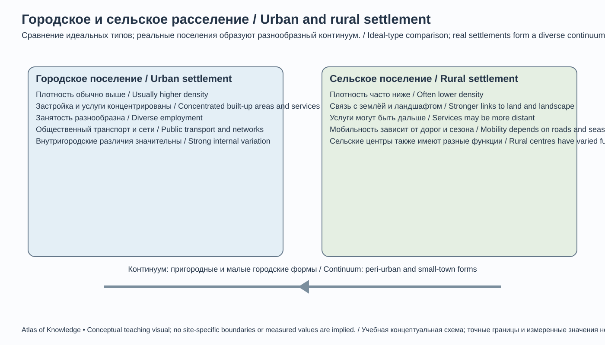
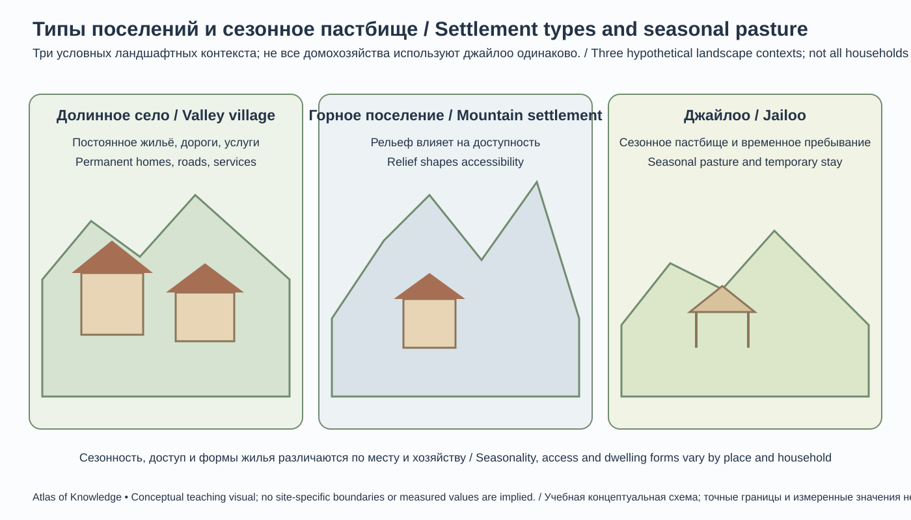

Глава 23. Население и расселение Кыргызстана
Chapter 23. Population and Settlement in Kyrgyzstan
Тема главы / Chapter theme: демографическая структура, динамика населения, миграция, этнокультурное разнообразие, городские и сельские поселения и пространственное развитие страны.
Ключевая идея / Key idea: население Кыргызстана распределено неравномерно: природные условия, исторические пути, хозяйственные возможности, транспортная доступность и миграция формируют контраст между густонаселёнными долинами и разреженными высокогорными территориями.
23.1. Население как объект географического изучения
Population as an Object of Geographical Study
География населения изучает численность, состав, размещение и перемещение людей, а также взаимосвязи населения с природной средой, экономикой, инфраструктурой и расселением. Демографические процессы имеют пространственное измерение: рождаемость, смертность, миграция и старение протекают неодинаково в разных областях, городах и сельских районах.
Для Кыргызстана особенно важны: - быстрый рост численности населения в последние десятилетия; - высокая доля детей и молодёжи по сравнению со многими стареющими обществами; - преобладание сельского населения, несмотря на постепенное увеличение доли городских жителей; - концентрация населения в Чуйской, Ферганской и других межгорных долинах; - внутренние перемещения в Бишкек, Ош и пригородные зоны; - трудовая миграция за пределы страны; - различия в демографической динамике областей.
Основные понятия
Постоянное население — люди, обычно проживающие на данной территории, включая временно отсутствующих в соответствии с правилами статистического учёта.
Наличное население — люди, фактически находившиеся на территории в момент учёта.
Естественный прирост — разность между числом родившихся и умерших за период.
Миграционный прирост — разность между прибывшими и выбывшими.
Общий прирост — изменение численности населения с учётом естественного движения, миграции и статистических корректировок.
При анализе необходимо проверять, какой именно показатель опубликован: численность на дату, среднегодовая численность, оценка, переписной итог или административный регистр.
Population geography studies the size, composition, distribution and movement of people, as well as the relationships between population, the natural environment, the economy, infrastructure and settlement. Demographic processes have a spatial dimension: fertility, mortality, migration and ageing vary between regions, cities and rural districts.
Key features of Kyrgyzstan include rapid population growth in recent decades; a relatively young age structure; a still predominantly rural population alongside gradual urbanisation; concentration in the Chuy, Fergana and other intermontane valleys; internal movement towards Bishkek, Osh and their suburban zones; and international labour migration.
Core concepts: - Usually resident population: people who normally live in a territory, including temporary absentees according to statistical rules. - Present population: people physically present in a territory at the reference time. - Natural increase: births minus deaths during a period. - Net migration: arrivals minus departures. - Total population change: the combined effect of natural change, migration and statistical adjustments.
Always identify whether a published figure is a population count on a specific date, an annual average, an estimate, a census result or an administrative-register figure.
23.2. Численность населения и её динамика
Population Size and Dynamics
По данным Национального статистического комитета Кыргызской Республики, численность постоянного населения на 1 января 2026 года составила около 7,404 млн человек. Это официальный национальный показатель на указанную дату; оценки международных организаций могут отличаться из-за методики и времени расчёта.
Открытый ряд Национального статистического комитета показывает рост населения с 7,162 млн на начало 2024 года до 7,282 млн на начало 2025 года и 7,404 млн на начало 2026 года. В 2025 году было зарегистрировано около 140,5 тыс. рождений и 33,4 тыс. смертей. Эти данные характеризуют демографическое движение, но не следует выводить долгосрочный прогноз только из одного года.
Динамика постоянного населения
| Дата | Население, млн человек | Источник/примечание |
|---|---|---|
| 25 марта 2022 года | 6,936 | Итог переписи населения и жилищного фонда 2022 года |
| Начало 2024 года | 7,162 | Оперативный/годовой ряд НСК |
| Начало 2025 года | 7,282 | Официальный ряд НСК |
| 1 января 2026 года | 7,404 | Официальный ряд НСК |
Разница между переписной датой и последующими годовыми оценками обусловлена естественным движением, миграцией и обновлением статистического учёта. При сравнении переписей следует учитывать территориальные и методологические изменения.
Факторы роста
- Сохраняющаяся относительно высокая рождаемость.
- Изменение возрастной структуры и большое число людей в репродуктивных возрастах.
- Снижение смертности в долгосрочной перспективе, несмотря на колебания по годам.
- Миграционные потоки, которые влияют на численность и распределение населения.
- Административные и статистические корректировки.
Естественное движение
Естественный прирост остаётся важным компонентом роста населения. Однако абсолютное число рождений зависит не только от уровня рождаемости на одну женщину, но и от численности женщин соответствующих возрастов. Поэтому для корректного анализа используют коэффициенты рождаемости, возрастные коэффициенты и суммарный коэффициент рождаемости, а не только количество рождений.
Смертность анализируют с учётом возрастной структуры. Грубый коэффициент смертности может быть выше в более старом населении даже при хорошем состоянии здравоохранения; для сравнения регионов и стран важны возрастные и стандартизованные показатели.
According to the National Statistical Committee (NSC), Kyrgyzstan's permanent population was approximately 7.404 million on 1 January 2026. The NSC open-data series records 7.162 million at the beginning of 2024, 7.282 million at the beginning of 2025 and 7.404 million at the beginning of 2026. About 140,500 births and 33,400 deaths were registered in 2025. These figures describe recent demographic change but should not be used alone to construct a long-term forecast.
| Reference date | Population, million | Source / note |
|---|---|---|
| 25 March 2022 | 6.936 | 2022 Population and Housing Census |
| Beginning of 2024 | 7.162 | NSC annual/operational series |
| Beginning of 2025 | 7.282 | NSC official series |
| 1 January 2026 | 7.404 | NSC official series |
The difference between the 2022 census result and later annual estimates reflects natural change, migration and statistical updating. Comparisons between census rounds must also account for territorial and methodological changes.
Population growth is influenced by fertility, the size of cohorts entering reproductive ages, long-term mortality trends, migration and statistical adjustments. Natural increase remains an important component. However, the absolute number of births depends both on fertility rates and on the number of women in relevant age groups. Sound analysis therefore uses age-specific and total fertility rates, not births alone. Mortality comparisons should account for age structure: crude death rates can be higher in older populations even where health services are effective.
23.3. Размещение населения и плотность
Population Distribution and Density
Средняя плотность населения Кыргызстана скрывает резкие пространственные контрасты. Значительная часть территории занята высокими горами, ледниками, крутыми склонами и высокогорными пастбищами. Постоянное население концентрируется в долинах, котловинах, предгорьях и вдоль транспортных коридоров.
Основные районы концентрации
- Чуйская долина: Бишкек, пригородная зона, города и сельские поселения вдоль основных дорог и оросительных систем.
- Ферганская долина и её кыргызская часть: Ошская, Джалал-Абадская и Баткенская области; высокая плотность сельских поселений и интенсивное земледелие.
- Иссык-Кульская котловина: цепочки поселений вокруг озера, сельскохозяйственные районы и туристические центры.
- Таласская долина: население сосредоточено в долине и у подножия Таласского Ала-Тоо.
- Нарынская область: население рассредоточено по межгорным долинам и котловинам; большие площади высокогорных территорий имеют низкую плотность постоянного населения.
Плотность населения
Плотность рассчитывается как отношение численности населения к площади территории:
[ D = \frac{P}{A} ]
где (D) — плотность населения, (P) — численность населения, (A) — площадь территории.
Для горной страны средняя плотность на квадратный километр не показывает, где именно живут люди. Полезно дополнительно рассчитывать плотность на пригодных для постоянного проживания землях, в долинах или в пределах застроенной территории — при условии чёткого определения знаменателя.
Факторы размещения
Природные: высота, климат, рельеф, вода, почвы, опасные процессы.
Исторические: древние земледельческие оазисы, торговые пути, сезонные кочевые маршруты, административные центры.
Экономические: рабочие места, сельское хозяйство, промышленность, торговля, услуги, туризм.
Инфраструктурные: дороги, железнодорожные узлы, водоснабжение, энергетика, школы, больницы и связь.
Kyrgyzstan's population is distributed very unevenly. Much of the national territory consists of high mountains, glaciers, steep slopes and high-altitude pastures. Permanent settlements are concentrated in valleys, intermontane basins, foothills and along transport corridors.
Major population-concentration zones include the Chuy Valley around Bishkek and its suburbs; the Kyrgyz part of the Fergana Valley across Osh, Jalal-Abad and Batken regions; the Issyk-Kul basin; the Talas Valley; and the intermontane valleys of Naryn Region. These areas differ in agricultural specialisation, accessibility, urban functions and exposure to natural hazards.
Population density is calculated as:
[ D = \frac{P}{A} ]
where (D) is population density, (P) is population and (A) is land area. For a mountainous country, average density per square kilometre does not show where people actually live. Density calculated for permanently habitable land, valley floors or built-up areas can be more informative, provided the denominator is clearly defined.
Settlement patterns are shaped by natural factors (elevation, climate, relief, water, soils and hazards), historical factors (agricultural oases, trade routes and seasonal pastoral routes), economic factors (jobs, farming, industry, trade, services and tourism) and infrastructure (roads, railways, water supply, energy, schools, health care and communications).
23.4. Городское и сельское население

23-E. Идеальные типы для сравнения, а не жёсткая классификация населённых пунктов; реальные поселения образуют континуум.Ideal types for comparison, not a rigid settlement classification; real places form a continuum.
EN: Comparative diagram of urban and rural settlement in Kyrgyzstan, showing differences in density, functions and service access.
Urban and Rural Population
Кыргызстан сохраняет преимущественно сельский характер расселения, однако доля городского населения постепенно растёт. По данным НСК, на начало 2026 года доля городского населения составляла около 42,3%, сельского — около 57,7%. Категория «городское население» определяется официальной административной классификацией; фактическая урбанизированность пригородных поселений может быть выше или ниже того, что отражает формальная статистика.
Городской рост связан с естественным приростом, внутренней миграцией, расширением пригородов и изменением административного статуса отдельных поселений.
Городские центры
Крупнейшие городские центры страны: - Бишкек — столица, крупнейший административный, образовательный, финансовый и сервисный центр; - Ош — важнейший центр юга страны, торговли, образования и региональных услуг; - Манас (до переименования — Джалал-Абад) — крупный городской центр юго-запада; - Каракол — административный и туристический центр Иссык-Кульской области; - Токмок — промышленный, транспортный и сервисный центр Чуйской долины; - Кара-Балта — промышленный и транспортный центр западной части Чуйской долины; - Узген, Кызыл-Кия, Сулюкта, Баткен, Нарын, Талас и другие города выполняют региональные функции.
Статус города, численность населения и административное подчинение необходимо сверять на конкретную дату: административно-территориальные преобразования меняют состав городов и районов.
Сельское расселение
Сельские поселения различаются по: - размеру и плотности застройки; - высоте и доступности; - специализации сельского хозяйства; - близости к городу и рынкам; - доступу к школам, медицине, воде и интернету; - сезонной мобильности населения.
В долинах распространены более крупные и плотные сёла, связанные с орошаемым земледелием. В высокогорных районах поселения часто меньше, удалённее и сильнее зависят от транспортной доступности и сезонных условий.
Kyrgyzstan retains a predominantly rural settlement pattern, although the urban share is gradually increasing. According to the NSC, at the beginning of 2026 approximately 42.3% of the population was classified as urban and 57.7% as rural. These categories follow the official administrative classification; the functional urbanisation of suburban settlements may not be fully reflected in formal statistics.
Urban growth is associated with natural increase, internal migration, suburban expansion and changes in the administrative status of settlements.
The principal urban centres include Bishkek (the capital and the country's main administrative, educational, financial and service hub); Osh (the major centre of the south); Manas (formerly Jalal-Abad); Karakol; Tokmok; Kara-Balta; Uzgen; Kyzyl-Kiya; Sulukta; Batken; Naryn and Talas. Names, population counts and administrative status must be checked for the date represented, because territorial reforms can change the composition of cities and districts.
Rural settlements vary in size, density, elevation, accessibility, agricultural specialisation, proximity to markets and access to schools, health care, water and the internet. Larger and denser villages are common in irrigated valleys; high-mountain settlements are often smaller, more remote and more exposed to seasonal transport constraints.
23.5. Административно-территориальная структура и население регионов
Administrative Structure and Regional Population
Кыргызстан включает семь областей и два города республиканского значения — Бишкек и Ош. Административные границы и состав районов следует показывать по официальной версии на дату публикации атласа.
По данным НСК на 1 января 2026 года, распределение постоянного населения по областям и городам выглядело следующим образом:
| Регион | Население, тыс. человек |
|---|---|
| Ошская область | 1 438,5 |
| Джалал-Абадская область | 1 379,9 |
| Бишкек | 1 358,6 |
| Чуйская область | 983,7 |
| Баткенская область | 605,3 |
| Иссык-Кульская область | 554,3 |
| Ош | 484,9 |
| Нарынская область | 316,2 |
| Таласская область | 282,9 |
| Всего | 7 404,3 |
Методическое предупреждение: региональные ряды НСК могут отражать изменения административного учёта и границ. В частности, сравнение Ошской и Чуйской областей с более ранними годами требует проверки территориальной сопоставимости. Нельзя трактовать скачок или снижение в ряду как массовое переселение без анализа методологии.
Региональные особенности
Баткенская область. Население сосредоточено в долинах и предгорьях, где развиты сельское хозяйство, торговля и трансграничные связи. Горный рельеф и сложная конфигурация границ влияют на транспортную доступность и размещение поселений.
Джалал-Абадская область. Один из наиболее населённых регионов. Население концентрируется в долинах и предгорных районах; важны сельское хозяйство, лесные ресурсы, энергетика, торговля и региональные услуги.
Иссык-Кульская область. Население распределено вокруг озёрной котловины и в долинах. Туризм формирует сезонную занятость и дополнительный спрос на инфраструктуру, особенно в прибрежной зоне.
Нарынская область. Характерны большие расстояния между населёнными пунктами, суровые зимы, высокогорное положение и значительная роль животноводства. Доступность социальных услуг и транспортная связанность имеют особое значение.
Ошская область. Высокая концентрация населения в Ферганской долине и предгорьях, интенсивные сельские поселения, торговля и связи с городом Ош. Внутри области значительны различия между долинными и высокогорными районами.
Таласская область. Население сосредоточено в Таласской долине и связанных с ней поселениях. Важны сельское хозяйство, транспортные связи и сезонная трудовая мобильность.
Чуйская область. Пригородное развитие вокруг Бишкека, сельское хозяйство, промышленность и транспортные коридоры формируют сложную систему городских и сельских поселений.
Бишкек. Крупнейший городской центр и основной узел управления, высшего образования, здравоохранения, финансов и деловых услуг. Агломерационное развитие выходит за пределы административной границы города.
Ош. Главный городской центр юга страны, расположенный в Ферганской долине. Город обслуживает обширную зону торговли, образования, здравоохранения, транспорта и культурных связей.
Kyrgyzstan comprises seven regions and two cities of republican significance, Bishkek and Osh. The NSC population distribution on 1 January 2026 was:
| Region / city | Population, thousand |
|---|---|
| Osh Region | 1,438.5 |
| Jalal-Abad Region | 1,379.9 |
| Bishkek | 1,358.6 |
| Chuy Region | 983.7 |
| Batken Region | 605.3 |
| Issyk-Kul Region | 554.3 |
| Osh city | 484.9 |
| Naryn Region | 316.2 |
| Talas Region | 282.9 |
| Total | 7,404.3 |
Regional time series may reflect changes in administrative accounting and boundaries. In particular, comparisons of Osh and Chuy regions with earlier years require a territorial-comparability check. A sharp rise or decline must not be interpreted as mass migration without examining the statistical methodology.
Regional settlement patterns differ. Batken's population is concentrated in valleys and foothills, where farming, trade and cross-border links are important. Jalal-Abad is one of the most populous regions, with settlement concentrated in valleys and foothills. Issyk-Kul's population is distributed around the lake basin and valleys, while tourism creates seasonal employment and infrastructure demand. Naryn is characterised by long distances, severe winters, high elevation and extensive livestock farming. Osh Region has dense settlement in the Fergana Valley and foothills, alongside sparsely populated mountain districts. Talas settlement is concentrated in the Talas Valley. Chuy has complex urban-rural and suburban patterns around Bishkek. Bishkek is the principal national centre for government, higher education, health care, finance and business services; Osh is the main urban hub of the south.
23.6. Демографическая структура: возраст и пол
Demographic Structure: Age and Sex
Возрастно-половая структура отражает распределение населения по возрастным группам и полу. Она влияет на потребность в школах, рабочих местах, медицинских услугах, жилье и пенсионной инфраструктуре.
Для Кыргызстана характерна относительно молодая возрастная структура по сравнению со многими европейскими и восточноазиатскими странами. Это связано с исторически более высокой рождаемостью и демографической инерцией.
Возрастные группы
В учебном анализе часто используют условное деление: - дети и подростки; - население трудоспособного возраста; - население старших возрастов.
Границы трудоспособного возраста должны соответствовать конкретному статистическому или правовому определению и году. Нельзя использовать одну возрастную границу для всех международных сравнений без оговорки.
Демографическая нагрузка
Коэффициент демографической нагрузки показывает отношение населения младших и старших возрастов к населению условно трудоспособного возраста. Он помогает оценивать потенциальную нагрузку на систему образования, здравоохранения, социальную защиту и рынок труда.
Половая структура
На начало 2026 года по данным НСК мужчины составляли около 49,5%, женщины — 50,5% населения страны. Соотношение полов меняется по возрасту и регионам. В младших возрастах обычно рождается несколько больше мальчиков, а в старших возрастах доля женщин может быть выше из-за различий смертности и продолжительности жизни.
Демографическое окно возможностей
Большая доля молодого и трудоспособного населения может стать преимуществом, если экономика создаёт продуктивные рабочие места, а система образования развивает востребованные навыки. Без инвестиций в человеческий капитал быстрый рост молодёжных когорт способен усиливать безработицу, неформальную занятость и эмиграционное давление.
Age-and-sex structure describes the distribution of a population across age groups and sex. It influences demand for schools, jobs, health services, housing and pension systems. Compared with many European and East Asian countries, Kyrgyzstan has a relatively young population, reflecting historically higher fertility and demographic momentum.
Educational analysis often distinguishes children and adolescents, the working-age population and older people. The age limits used for working age must be stated and matched to the relevant statistical or legal definition. The demographic dependency ratio compares younger and older age groups with the population of conventionally working age. It is useful for assessing potential pressure on education, health care, social protection and labour markets.
At the beginning of 2026, the NSC reported approximately 49.5% men and 50.5% women in the national population. Sex ratios vary by age and region. Slightly more boys are usually born than girls, while women may form a larger share of older age groups because of differences in mortality and life expectancy.
A large young and working-age population can become a demographic dividend if education develops relevant skills and the economy creates productive jobs. Without investment in human capital, large youth cohorts may intensify unemployment, informal work and pressure to emigrate.
23.7. Этническое и языковое разнообразие
Ethnic and Linguistic Diversity
Кыргызстан — многоэтничное государство. По переписи населения и жилищного фонда 2022 года в стране проживают представители многочисленных этнических групп. Среди крупнейших групп — кыргызы, узбеки, русские, дунгане, таджики, уйгуры, казахи и другие сообщества.
Переписные данные 2022 года указывают, что кыргызы составляли около 77,6% населения, узбеки — около 14,2%, русские — около 4,1%; остальные группы включали несколько меньших по численности сообществ. Эти доли относятся к переписной дате и не должны автоматически переноситься на 2026 год.
География этнического расселения
Этническая структура различается по регионам и населённым пунктам. Узбеки исторически составляют значительную часть населения ряда районов юга страны и городских поселений Ферганской долины. Русскоязычные сообщества заметнее представлены в Бишкеке и некоторых городах Чуйской и Иссык-Кульской областей. Дунганские и уйгурские общины имеют исторические центры расселения в отдельных районах Чуйской долины и городах.
Эти обобщения не заменяют районных переписных данных. Этническую принадлежность нельзя выводить из места проживания, фамилии, языка или внешности отдельного человека.
Языковая география
Кыргызский язык — государственный язык Кыргызской Республики. Русский язык имеет статус официального. В повседневной жизни используются также узбекский, таджикский, дунганский, уйгурский и другие языки.
Языковая практика зависит от семьи, образования, места работы, поколения и городской или сельской среды. Перепись может учитывать владение языками и самооценку языковых навыков; эти показатели не равнозначны родному языку или языку повседневного общения.
Kyrgyzstan is a multi-ethnic country. The 2022 Population and Housing Census recorded many ethnic communities. The largest groups included Kyrgyz, Uzbeks, Russians, Dungans, Tajiks, Uyghurs, Kazakhs and others. At the census date, Kyrgyz accounted for approximately 77.6%, Uzbeks 14.2% and Russians 4.1% of the population. These are 2022 census shares and must not be automatically projected to 2026.
Ethnic composition varies geographically. Uzbeks form a significant share of the population in several southern districts and settlements of the Fergana Valley. Russian-speaking communities are more visible in Bishkek and some cities of Chuy and Issyk-Kul regions. Dungan and Uyghur communities have historical settlement centres in parts of the Chuy Valley and in certain towns. These general patterns do not replace district-level census data, and a person's ethnicity must never be inferred from their place of residence, surname, language or appearance.
Kyrgyz is the state language and Russian has official-language status. Uzbek, Tajik, Dungan, Uyghur and other languages are also used in everyday life. Language practices vary with family, education, employment, generation and urban or rural setting. Mother tongue, language proficiency and language used in daily communication are different statistical variables and should not be treated as interchangeable.
23.8. Миграция: внутренняя и внешняя
Migration: Internal and International
Миграция — перемещение людей с изменением места жительства на постоянной или временной основе. Она меняет не только численность населения, но и его возрастную, профессиональную и территориальную структуру.
Внутренняя миграция
Основные направления внутренних перемещений включают: - переезд из сёл и малых городов в Бишкек и Ош; - переселение в пригородные зоны крупных городов; - перемещение между областями в поисках работы и образования; - сезонную мобильность, связанную с сельским хозяйством, строительством и туризмом.
Внутренняя миграция усиливает спрос на жильё, транспорт, школы, медицину и коммунальные услуги в быстрорастущих городских районах. Одновременно некоторые сельские территории сталкиваются с оттоком молодёжи и дефицитом работников.
Внешняя трудовая миграция
Граждане Кыргызстана работают за рубежом, в том числе в России, Казахстане, Турции, Южной Корее и других странах. Направления и масштабы меняются в зависимости от экономической конъюнктуры, миграционного законодательства, спроса на труд и семейных стратегий.
Денежные переводы мигрантов поддерживают доходы домохозяйств и внутреннее потребление, но зависимость от внешних рынков труда создаёт уязвимость к экономическим и политическим изменениям в странах назначения.
Миграция и перепись 2022 года
Перепись 2022 года включала расширенный блок вопросов о трудовой деятельности и миграции. Для анализа важно различать: - эмигрантов, выехавших из страны; - иммигрантов, прибывших в страну; - внутренних мигрантов; - временных трудовых мигрантов; - членов семей, оставшихся в стране; - возвращающихся мигрантов.
Число зарегистрированных пересечений границы не равно числу мигрантов: один человек может пересекать границу многократно.
23.8.1. Как измеряют миграцию и почему статистика различаетсяMeasuring Migration and Understanding Statistical Differences
Миграция — изменение обычного места жительства человека. Для географического анализа важно отличать постоянное или длительное переселение от ежедневных поездок на работу, сезонного выпаса скота, временной учёбы и краткосрочных визитов. Разные статистические системы используют разные определения продолжительности проживания и периода учёта, поэтому показатели нельзя сопоставлять без проверки методики.
Основные показатели:
- Число прибывших — количество людей, переехавших на территорию за выбранный период.
- Число выбывших — количество людей, сменивших место жительства и покинувших территорию.
- Миграционное сальдо — разность прибывших и выбывших. Положительное значение означает чистый приток, отрицательное — чистый отток.
- Коэффициент миграционного прироста — миграционное сальдо, отнесённое к среднегодовой численности населения и обычно выраженное на 1 000 жителей.
- Валовая миграция — сумма прибывших и выбывших; показывает масштаб перемещений, но не направление чистого изменения численности.
Формула коэффициента миграционного прироста:
[ K_m=\frac{I-O}{P_{ср}}\times1000 ]
где (I) — число прибывших, (O) — число выбывших, (P_{ср}) — среднегодовая численность населения.
Условный пример. За год в район с населением 100 000 человек прибыло 2 400 человек, а выбыло 1 900. Миграционное сальдо составляет +500 человек, валовая миграция — 4 300 человек, коэффициент миграционного прироста — +5‰. Это не означает, что все 4 300 человек изменили численность района на эту величину: валовой показатель учитывает оба потока.
Почему источники могут расходиться. Перепись фиксирует население по правилам конкретного переписного момента; регистрация места жительства отражает административные действия; обследования домохозяйств могут учитывать фактическое проживание и временное отсутствие. Часть перемещений не регистрируется, а один человек может менять место жительства несколько раз. Внутренняя миграция также может быть сезонной и циркулярной.
Для Кыргызстана особенно важно не смешивать постоянную миграцию из села в город с сезонной мобильностью, связанной с сельским хозяйством, пастбищами, строительством, учёбой и временной занятостью. При анализе следует указывать определение мигранта, период, территориальный уровень и источник данных.
Учебное задание. Найдите данные о прибывших и выбывших для одной области или города за несколько лет. Рассчитайте миграционное сальдо и коэффициент на 1 000 жителей. Сопоставьте результаты с изменением общей численности населения и объясните, почему миграция — лишь один из компонентов демографической динамики.
Migration is a change in a person’s usual place of residence. Geographic analysis must distinguish permanent or long-term relocation from daily commuting, seasonal livestock movement, temporary study and short visits. Statistical systems use different definitions of residence duration and reference periods, so indicators should not be compared without checking the methodology.
Key indicators:
- Immigrants or in-migrants — people who move into an area during a selected period.
- Emigrants or out-migrants — people who change their usual residence and leave the area.
- Net migration — in-migrants minus out-migrants. A positive value indicates net inflow; a negative value indicates net outflow.
- Net migration rate — net migration relative to the mid-year population, usually expressed per 1,000 residents.
- Gross migration — the sum of in-migration and out-migration; it describes the scale of movement, not the net population change.
The net migration rate is calculated as:
[ K_m=\frac{I-O}{P_{mid}}\times1000 ]
where (I) is the number of in-migrants, (O) is the number of out-migrants and (P_{mid}) is the mid-year population.
Hypothetical example. During one year, 2,400 people move into a district with a population of 100,000, while 1,900 move out. Net migration is +500 people, gross migration is 4,300 people, and the net migration rate is +5‰. The gross figure does not mean that the district’s population changed by 4,300: it counts both directions of movement.
Why sources may differ. A census records population according to the rules applied on a specific census date; residence registration records administrative procedures; household surveys may measure actual residence and temporary absence. Some moves are not registered, and one person may change residence more than once. Internal migration may also be seasonal or circular.
For Kyrgyzstan, it is particularly important not to confuse permanent rural-to-urban migration with seasonal mobility related to agriculture, pastures, construction, education and temporary employment. Analyses should state the definition of a migrant, the reference period, geographic scale and data source.
Learning activity. Find data on in-migration and out-migration for one region or city over several years. Calculate net migration and the rate per 1,000 residents. Compare the results with the change in total population and explain why migration is only one component of demographic change.
23.8.2. Современная картина миграции: официальная статистика и оценки мобильностиRecent Migration Patterns: Official Statistics and Mobility Estimates
Для Кыргызстана важно сопоставлять несколько источников, но не смешивать их показатели. Национальный статистический комитет (НСК) публикует ежегодные данные о миграционном приросте или оттоке. Международная организация по миграции (МОМ) через систему Displacement Tracking Matrix (DTM) проводит оценку мобильности на уровне сообществ. Эти источники отвечают на разные вопросы и используют разные методы.
Важное ограничение: приведённый ниже ряд НСК относится к внешней миграции (прибытие из-за рубежа и выбытие за рубеж). Он не является суммарным показателем внутренней и внешней миграции. Внутренние перемещения между областями и городами учитываются отдельно и не должны прибавляться к этому ряду без проверки методики и устранения двойного счёта.
Зарегистрированный баланс внешней миграции по данным НСК
По опубликованному НСК ряду миграционный прирост страны составил −769 человек в 2021 году, затем стал положительным: 5 917 в 2022 году, 9 843 в 2023 году, 11 208 в 2024 году и 15 426 в 2025 году. В таблице за 2025 год отражён именно баланс прибывших и выбывших, а не общее количество людей, которые перемещались.
| Территория | Миграционный прирост / отток в 2025 году, человек |
|---|---|
| Баткенская область | +1 739 |
| Джалал-Абадская область | +2 844 |
| Иссык-Кульская область | +359 |
| Нарынская область | +102 |
| Ошская область | +2 992 |
| Таласская область | +285 |
| Чуйская область | +2 298 |
| Бишкек | +3 221 |
| Ош | +1 586 |
| Кыргызская Республика | +15 426 |
Бишкек и Ош в таблице показаны отдельно от областей, поскольку являются городами республиканского значения. Национальное значение равно сумме региональных значений, приведённых в таблице.
В таблице НСК за 2025 год внешняя миграция показана отдельно от внутриреспубликанской. В страну на постоянное место жительства прибыло 17 965 человек, выбыло 2 539; внешний миграционный прирост составил 15 426 человек. Одновременно внутри страны было зарегистрировано 72 574 прибытия и столько же выбытий: 54 853 межобластных и 17 721 внутриобластное перемещение в каждом направлении.
| Показатель миграции в 2025 году | Прибыло | Выбыло | Баланс |
|---|---|---|---|
| Вся зарегистрированная миграция | 90 539 | 75 113 | +15 426 |
| Внешняя миграция | 17 965 | 2 539 | +15 426 |
| Внутриреспубликанская миграция | 72 574 | 72 574 | 0 |
| Межобластная миграция (часть внутренней) | 54 853 | 54 853 | 0 |
| Внутриобластная миграция (часть внутренней) | 17 721 | 17 721 | 0 |
Таким образом, на национальном уровне итоговое сальдо всей зарегистрированной миграции совпало с внешним миграционным сальдо, поскольку внутренние перемещения внутри страны в сумме дают равное число прибытий и выбытий. Это не означает, что внутренняя миграция отсутствует или несущественна: она влияет на распределение населения между областями, районами и городами. Региональная таблица выше показывает именно внешнее миграционное сальдо, а не полное сальдо внутренней и внешней миграции по каждому региону.
Данные относятся к зарегистрированным перемещениям на постоянное место жительства и не охватывают автоматически все формы трудовой мобильности, временного отсутствия или повторных поездок. Для любого вывода следует сохранять определение показателя и методологию НСК.
Как интерпретировать данные. Положительный миграционный баланс в официальном ряду не доказывает, что трудовая эмиграция перестала иметь большое значение. В стране могут одновременно находиться многочисленные граждане, работающие за рубежом, возвращаться ранее выехавшие жители и прибывать иностранные граждане. Баланс — разность потоков за период; он не показывает полный запас мигрантов за границей и не раскрывает индивидуальные причины переезда.
Оценка мобильности МОМ на уровне сообществ
В седьмом раунде Baseline Mobility Assessment, проведённом МОМ в Кыргызстане в феврале–апреле 2026 года, были охвачены 1 151 сообщество во всех семи областях и двух городах республиканского значения. Информация собиралась через интервью с 1 939 ключевыми информантами и непосредственные наблюдения. В отчёте приведены оценки людей, переместившихся в период с января по декабрь 2025 года и остававшихся в соответствующих местах на момент сбора данных в апреле 2026 года.
| Категория, отражённая в оценке МОМ | Оценка |
|---|---|
| Международные трудовые мигранты, находившиеся в обследованных сообществах Кыргызстана | 30 073 |
| Внутренние мигранты, находившиеся в обследованных сообществах | 70 340 |
| Граждане Кыргызстана, продолжавшие жить за рубежом | 110 354 |
| Вернувшиеся из-за рубежа граждане, находившиеся в сообществах возвращения | 85 197 |
Эти числа нельзя складывать в единый показатель мигрантов страны или напрямую вычитать одно из другого. Они описывают разные категории мобильности и основаны на оценках ключевых информантов в обследованных сообществах, а не на сплошной переписи каждого человека или административном регистре. Они также не являются прямой заменой ежегодной статистики НСК. Их ценность — в более подробном представлении о типах мобильности, местах проживания и возвращения мигрантов.
Что показывают два источника вместе
Официальная статистика НСК позволяет проследить зарегистрированный баланс по годам и административным территориям. Оценка МОМ помогает увидеть группы, которые могут быть недостаточно заметны в обычной регистрации: внутренне перемещающихся жителей, трудовых мигрантов, остающихся за границей, и вернувшихся граждан. Совместное использование этих данных возможно только при явном указании различий в определениях, периодах, охвате и методах сбора.
Учебное задание. Сравните миграционный баланс НСК за 2021 и 2025 годы. Затем объясните, почему оценки МОМ о гражданах, продолжающих жить за рубежом, нельзя приравнять к отрицательному миграционному балансу за один год. В ответе используйте понятия «поток», «запас населения», «миграционное сальдо» и «метод сбора данных».
Recent Migration Patterns: Official Statistics and Mobility Estimates
For Kyrgyzstan, several sources should be compared without treating their indicators as interchangeable. The National Statistical Committee (NSC) publishes annual net migration or outflow data. The International Organization for Migration (IOM), through its Displacement Tracking Matrix (DTM), conducts community-level mobility assessments. These sources answer different questions and use different methods.
Important limitation: the NSC series below refers to external (international) migration—arrivals from abroad and departures abroad. It is not a combined measure of internal and international migration. Moves between regions and cities within Kyrgyzstan are recorded separately and must not be added to this series without checking definitions and avoiding double counting.
Registered international migration balance in NSC statistics
According to the NSC series, the country's migration balance was −769 people in 2021, then became positive: 5,917 in 2022, 9,843 in 2023, 11,208 in 2024 and 15,426 in 2025. The 2025 table below shows the net balance of arrivals and departures, not the total number of people who moved.
| Territory | Net migration / outflow in 2025, people |
|---|---|
| Batken Region | +1,739 |
| Jalal-Abad Region | +2,844 |
| Issyk-Kul Region | +359 |
| Naryn Region | +102 |
| Osh Region | +2,992 |
| Talas Region | +285 |
| Chuy Region | +2,298 |
| Bishkek | +3,221 |
| Osh City | +1,586 |
| Kyrgyz Republic | +15,426 |
Bishkek and Osh City are shown separately because they have republican-level status and are not included in the oblast totals. The national figure equals the sum of the regional values shown in the table.
The NSC's 2025 table separates external migration from internal migration. There were 17,965 arrivals into the country for permanent residence and 2,539 departures abroad, producing a net international migration gain of 15,426. At the same time, 72,574 arrivals and an equal number of departures were registered within the country: 54,853 inter-oblast moves and 17,721 moves within oblasts in each direction.
| Migration indicator in 2025 | Arrivals | Departures | Net balance |
|---|---|---|---|
| All registered migration | 90,539 | 75,113 | +15,426 |
| International migration | 17,965 | 2,539 | +15,426 |
| Internal migration | 72,574 | 72,574 | 0 |
| Inter-oblast migration (part of internal) | 54,853 | 54,853 | 0 |
| Intra-oblast migration (part of internal) | 17,721 | 17,721 | 0 |
At the national level, the net balance of all registered migration therefore equals the international migration balance because internal moves produce equal numbers of arrivals and departures within the country. This does not mean that internal migration is absent or insignificant: it changes the distribution of population among regions, districts and cities. The regional table above reports the international migration balance only, not the combined internal and international balance for each region.
These figures refer to registered moves for permanent residence and do not automatically capture all forms of labour mobility, temporary absence or repeated travel. The indicator's definition and the NSC methodology must always be retained.
How to interpret the data. A positive migration balance in the official series does not prove that labour emigration has ceased to be important. Many citizens may continue to work abroad while previous migrants return and foreign citizens arrive. A balance is the difference between flows during a period; it does not show the total stock of citizens living abroad or the individual reasons for moving.
IOM community-level mobility assessment
In the seventh round of the IOM Baseline Mobility Assessment, conducted in Kyrgyzstan in February–April 2026, 1,151 communities across all seven regions and the two republican-level cities were covered. Information was collected through interviews with 1,939 key informants and direct observation. The report presents estimates for people who moved between January and December 2025 and remained in the relevant destination or return locations at the time of data collection in April 2026.
| Category reported in the IOM assessment | Estimate |
|---|---|
| International migrant workers hosted in assessed communities in Kyrgyzstan | 30,073 |
| Internal migrants hosted in assessed communities | 70,340 |
| Kyrgyz nationals still living abroad | 110,354 |
| Return migrants who had returned from abroad and remained in their communities | 85,197 |
These figures must not be added into one national migrant total or directly subtracted from one another. They describe different mobility categories and are based on key-informant estimates in assessed communities, not a census of every individual or an administrative register. They are not a direct replacement for annual NSC statistics. Their value lies in providing a more detailed picture of mobility types, places of residence and return.
What the two sources show together
NSC statistics help track the registered balance over time and across administrative territories. The IOM assessment helps identify groups that may be less visible in routine registration: internally mobile residents, labour migrants still abroad and returning citizens. The datasets can be used together only when differences in definitions, reference periods, coverage and collection methods are clearly stated.
Learning activity. Compare the NSC migration balance in 2021 and 2025. Then explain why the IOM estimate of citizens still living abroad cannot be equated with a negative migration balance for a single year. Use the terms “flow”, “population stock”, “net migration” and “data-collection method”.
23.9. Урбанизация и развитие агломераций
Urbanization and Metropolitan Development
Урбанизация — процесс роста городского населения, расширения городских функций и распространения городского образа жизни. Она включает не только увеличение населения официальных городов, но и функциональное объединение города с пригородами.
Бишкекская агломерация
Бишкек — главный полюс притяжения населения, капитала, образования, здравоохранения и административных функций. Рост пригородных поселений создаёт функциональную агломерацию, выходящую за административные границы столицы.
Основные задачи: - согласование землепользования и застройки; - развитие общественного транспорта; - водоснабжение и канализация; - управление отходами; - защита сельскохозяйственных земель; - снижение загрязнения воздуха; - развитие школ, больниц и общественных пространств.
Ошская городская система
Ош выступает главным центром юга страны и тесно связан с окружающими населёнными пунктами. Городская система включает трудовые, образовательные, торговые и транспортные связи с Ошской и Джалал-Абадской областями.
Вторичные города
Региональные центры и малые города важны для сбалансированного развития. Их укрепление может уменьшить чрезмерную концентрацию функций в Бишкеке и Оше. Для этого необходимы рабочие места, качественные услуги, транспортная доступность, цифровая инфраструктура и инвестиции.
Urbanisation is the growth of the urban population, the expansion of urban functions and the spread of urban ways of life. It involves not only population growth within officially designated cities but also the functional integration of cities with their suburbs.
The Bishkek agglomeration. Bishkek is the country's main centre of attraction for people, capital, education, healthcare and administration. Growth in surrounding settlements creates a functional urban area extending beyond the capital's administrative boundary. Key planning tasks include coordinating land use and construction, improving public transport, extending water supply and sewerage, managing waste, protecting agricultural land, reducing air pollution, and providing schools, hospitals and public spaces.
The Osh urban system. Osh is the principal urban centre of southern Kyrgyzstan. It is linked to surrounding settlements and to Osh and Jalal-Abad regions through commuting, education, trade and transport.
Secondary cities. Regional centres and smaller towns are important for balanced territorial development. Strengthening them can reduce excessive concentration of functions in Bishkek and Osh. This requires employment opportunities, reliable services, transport access, digital infrastructure and investment.
23.9.1. Как определить границы городской агломерацииDelineating an Urban Agglomeration
Административная граница города не всегда совпадает с фактической городской территорией. Застроенные кварталы могут выходить за неё, а жители пригородных сёл ежедневно ездить в центральный город на работу, учёбу, лечение и за услугами. Поэтому для анализа урбанизации важно различать административный город, непрерывную застроенную территорию и функциональную городскую зону.
Три подхода к определению территории:
- Административный подход. Используются официальные границы города и муниципалитетов. Он удобен для бюджетной и управленческой статистики, но может исключать тесно связанные пригороды.
- Морфологический подход. Выделяется непрерывная или почти непрерывная застройка по спутниковым снимкам и картам землепользования. Результат зависит от разрешения снимков и выбранного допустимого расстояния между застроенными участками.
- Функциональный подход. Учитываются ежедневные поездки на работу и учёбу, транспортные связи и доступность услуг. Пригороды включаются в функциональную зону, если их население тесно связано с городским ядром. Конкретные пороги маятниковой миграции должны быть указаны и обоснованы; единого универсального порога для всех стран нет.
Пример. Представим, что официальный город имеет население 500 000 человек, а прилегающие поселения, тесно связанные с ним ежедневными поездками, — ещё 150 000. В административной статистике города остаётся 500 000 жителей, тогда как функциональная городская зона в рамках принятого определения охватывает 650 000. Эти цифры нельзя смешивать: они отвечают на разные вопросы.
Почему границы важны для планирования. Если транспорт, водоснабжение, канализация, управление отходами и защита от паводков планируются только внутри административной границы, инфраструктура пригородов может отставать от фактического роста населения. В то же время расширение функциональной зоны не означает автоматического изменения юридических границ или статуса поселений.
Учебное задание. Сравните административную карту Бишкека с картой застроенной территории и доступными данными о поездках жителей пригородов. Отметьте, какие поселения функционально связаны с городом, и перечислите данные, которых не хватает для точного определения агломерации. Не делайте вывод о численности населения по одной спутниковой карте.
Example. Suppose an official city has 500,000 residents and nearby settlements closely connected to it by daily commuting have another 150,000. The city's administrative population remains 500,000, while the functional urban area, under the chosen definition, includes 650,000 people. These figures must not be mixed because they answer different questions.
Why boundaries matter for planning. If transport, water supply, sewerage, waste management and flood protection are planned only within the administrative boundary, suburban infrastructure may lag behind actual population growth. Expanding a functional urban area does not automatically change legal boundaries or settlement status.
Learning activity. Compare Bishkek's administrative map with a built-up-area map and available commuting data. Identify settlements functionally connected to the city and list the data needed to delineate the agglomeration accurately. Do not infer population size from a satellite image alone.
An administrative city boundary does not always match the actual urban area. Built-up neighbourhoods may extend beyond it, while residents of nearby villages commute daily to the central city for work, education, healthcare and services. Urban analysis should therefore distinguish an administrative city, a continuous built-up area and a functional urban area.
Three approaches to delineation:
- Administrative approach. Uses official city and municipal boundaries. It is useful for budgets and governance statistics but may exclude closely connected suburbs.
- Morphological approach. Identifies continuous or nearly continuous built-up land using satellite imagery and land-use maps. The result depends on image resolution and the chosen maximum gap between built-up areas.
- Functional approach. Considers daily commuting, transport links and access to services. Suburbs are included in a functional area when their residents are closely connected to the urban core. Any commuting threshold must be stated and justified; there is no single universal threshold for every country.
Example. Assume an official city has 500,000 residents and nearby settlements closely connected through daily commuting have another 150,000. The administrative city population remains 500,000, while the functional urban area, under the chosen definition, includes 650,000 people. These figures must not be mixed because they answer different questions.
Why boundaries matter for planning. If transport, water supply, sewerage, waste management and flood protection are planned only within the administrative boundary, suburban infrastructure may lag behind actual population growth. Expanding a functional urban area does not, however, automatically change legal boundaries or settlement status.
Learning activity. Compare an administrative map of Bishkek with a map of its built-up area and any available data on commuting from surrounding settlements. Identify settlements functionally connected to the city and list the data needed for a precise delineation of the agglomeration. Do not infer population totals from a satellite image alone.
23.10. Сельское расселение, сезонная мобильность и джайлоо

23-J. Обобщённые ландшафтные ситуации; сезонное использование джайлоо различается между хозяйствами и регионами.Generalised landscape settings; seasonal jailoo use varies among households and regions.
EN: Illustration of a valley village, mountain settlement and seasonal jailoo camp, distinguishing temporary from permanent population.
Rural Settlement, Seasonal Mobility and Jailoo
Сельское расселение Кыргызстана тесно связано с долинным земледелием и горным животноводством. Сёла размещаются вблизи источников воды, орошаемых земель, дорог и относительно безопасных площадок.
Типы сельских поселений
- крупные сёла в орошаемых долинах;
- линейные поселения вдоль рек и дорог;
- небольшие горные сёла;
- поселения при промышленных и транспортных объектах;
- сезонные стоянки и пастбищные комплексы.
Сезонная мобильность
Перегон скота на летние пастбища (джайлоо) и возвращение на зимние пастбища — важная форма сезонной мобильности. Она связана с природной продуктивностью разных высотных поясов и традиционной организацией хозяйства.
Джайлоо не следует считать постоянным населённым пунктом в статистическом смысле без соответствующего определения. Сезонные стоянки, временные домохозяйства и постоянные сёла — разные категории.
Инфраструктурные вызовы
Удалённые поселения могут испытывать сложности с доступом к: - круглогодичным дорогам; - медицинской помощи и экстренной эвакуации; - среднему и профессиональному образованию; - питьевой воде и санитарии; - устойчивому электроснабжению; - мобильной связи и интернету.
Географический анализ доступности должен учитывать время поездки, сезонную проходимость и качество инфраструктуры, а не только расстояние по прямой.
Rural settlement in Kyrgyzstan is closely linked to valley agriculture and mountain livestock raising. Villages are commonly located near water sources, irrigated land, roads and relatively safe sites.
Types of rural settlement include large villages in irrigated valleys; linear settlements along rivers and roads; small mountain villages; settlements associated with industrial or transport facilities; and seasonal camps and pasture complexes.
Seasonal mobility. Moving livestock to summer pastures (jailoo) and returning to winter pastures is an important form of seasonal mobility. It reflects the differing productivity of altitudinal zones and the traditional organisation of pastoral livelihoods. A jailoo should not be classified as a permanent settlement in statistical terms unless the relevant definition explicitly provides for this. Seasonal camps, temporarily occupied households and permanent villages are distinct categories.
Infrastructure challenges. Remote settlements may have limited access to all-season roads, healthcare and emergency evacuation, secondary and vocational education, safe drinking water and sanitation, reliable electricity, mobile networks and the internet. Accessibility analysis should consider actual travel time, seasonal road conditions and infrastructure quality—not straight-line distance alone.
23.11. Население, природная среда и климатические риски
Population, Environment and Climate Risks
Размещение населения в горной стране тесно связано с природными опасностями. Поселения, дороги и сельскохозяйственные земли могут находиться в зонах землетрясений, селей, паводков, оползней, лавин и камнепадов.
Основные пространственные риски
- землетрясения и связанные с ними вторичные процессы;
- селевые потоки и паводки в долинах;
- оползни и обвалы на крутых склонах;
- лавины в горных районах;
- засухи и дефицит воды в отдельных долинах;
- экстремальная жара в городах и предгорьях;
- деградация пастбищ и эрозия земель.
Климатическая адаптация населённых пунктов
Меры адаптации включают: 1. картирование опасностей и уязвимости; 2. запрет или ограничение строительства в опасных зонах; 3. системы раннего предупреждения; 4. устойчивые дороги, мосты и водоотвод; 5. планы эвакуации и готовность местных служб; 6. защиту водоснабжения и энергетической инфраструктуры; 7. развитие зелёных зон и снижение эффекта городского острова тепла.
Рост населения не должен автоматически вести к освоению опасных территорий. Пространственное планирование должно учитывать природные ограничения.
In a mountainous country, settlement patterns are closely connected with natural hazards. Villages, roads and agricultural land may lie in areas exposed to earthquakes, debris flows, floods, landslides, avalanches and rockfalls.
Major spatial risks include earthquakes and secondary effects; debris flows and floods in valleys; landslides and slope failures; mountain avalanches; drought and local water scarcity; extreme heat in cities and foothills; pasture degradation and soil erosion.
Climate adaptation and risk reduction require hazard and vulnerability mapping; prohibiting or restricting construction in dangerous areas; early-warning systems; resilient roads, bridges and drainage; evacuation plans and prepared local services; protection of water and energy infrastructure; and green spaces that reduce the urban heat-island effect.
Population growth should not automatically lead to settlement in hazardous locations. Spatial planning must respect natural constraints.
23.12. Демографическое будущее Кыргызстана
Kyrgyzstan’s Demographic Future
Будущее населения определяется сочетанием рождаемости, смертности, миграции, образования, занятости и изменения возрастной структуры. Любой прогноз является условным сценарием, а не точным предсказанием.
Возможные направления
Демографический дивиденд. Молодое население может поддержать экономический рост при наличии качественного образования, рабочих мест, здравоохранения и равных возможностей для женщин и мужчин.
Рост городов. Продолжение миграции в крупные центры повысит нагрузку на жильё, транспорт, водоснабжение и коммунальную инфраструктуру.
Изменение сельских территорий. Одни сёла будут расширяться благодаря близости к городам и дорогам, другие могут терять молодое население и экономическую активность.
Миграционная трансформация. Возвращение мигрантов, новые направления трудовой мобильности и цифровая занятость могут изменить структуру домохозяйств и рынка труда.
Постепенное старение. По мере изменения рождаемости и увеличения продолжительности жизни возрастёт значение здравоохранения, социальной защиты и инфраструктуры для старших возрастов.
Условия устойчивого развития
- инвестиции в образование и профессиональные навыки;
- создание продуктивной занятости в регионах;
- доступное жильё и общественный транспорт;
- развитие малых и средних городов;
- качественные медицинские и социальные услуги;
- гендерное равенство и репродуктивное здоровье;
- устойчивое управление водными, земельными и энергетическими ресурсами.
Kyrgyzstan's demographic future will be shaped by fertility, mortality, migration, education, employment and changes in age structure. Any population projection is a conditional scenario, not an exact prediction.
Possible developments
- Demographic dividend. A young population can support economic growth if quality education, decent jobs, healthcare and equal opportunities for women and men are available.
- Urban growth. Continued movement towards major centres will increase demand for housing, transport, water supply and municipal services.
- Rural change. Some villages may expand because of their proximity to cities and roads, while others may lose young residents and economic activity.
- Changing migration patterns. Return migration, new destinations for labour mobility and digital employment may reshape households and labour markets.
- Gradual population ageing. Changes in fertility and longer life expectancy will increase the importance of healthcare, social protection and infrastructure suited to older people.
Conditions for sustainable development include investment in education and vocational skills; productive employment in the regions; affordable housing and public transport; stronger small and medium-sized cities; accessible healthcare and social services; gender equality and reproductive health; and sustainable management of water, land and energy resources.
23.13. Методы демографического и географического анализа
Methods of Demographic and Geographical Analysis
| Метод | Назначение | Ограничения |
|---|---|---|
| Перепись населения | Подробная информация о населении и домохозяйствах | Проводится периодически; зависит от охвата и качества ответов |
| Текущий статистический учёт | Регистрация рождений, смертей и миграции | Возможен недоучёт отдельных событий |
| Демографические коэффициенты | Сравнение процессов между территориями | Требуют правильного знаменателя и стандартизации |
| Возрастно-половая пирамида | Анализ структуры населения | Зависит от качества возрастных данных |
| Когортный анализ | Изучение поколений во времени | Нужны сопоставимые временные ряды |
| Миграционные обследования | Анализ причин, маршрутов и последствий миграции | Выборка может не охватывать мобильные группы |
| ГИС-картирование | Пространственный анализ населения и доступности | Качество зависит от актуальности геоданных |
| Сетевой анализ | Оценка доступности школ, больниц, рынков и рабочих мест | Нужны реальные данные дорог и времени поездки |
| Дистанционное зондирование | Анализ застройки и расширения городов | Нельзя напрямую определить число жителей по одному снимку |
| Сценарное прогнозирование | Оценка возможных демографических траекторий | Результат зависит от предположений о рождаемости, смертности и миграции |
| Method | Purpose | Limitations |
|---|---|---|
| Population census | Detailed information about people and households | Conducted periodically; depends on coverage and response quality |
| Current statistical registration | Records births, deaths and migration | Some events may be under-recorded |
| Demographic rates | Compares processes between territories | Requires an appropriate denominator and, where needed, standardisation |
| Population pyramid | Analyses age and sex structure | Depends on the quality of age data |
| Cohort analysis | Studies generations over time | Requires comparable time series |
| Migration surveys | Examines causes, routes and consequences of migration | Samples may miss highly mobile groups |
| GIS mapping | Spatial analysis of population and accessibility | Depends on the currency and quality of geographic data |
| Network analysis | Assesses access to schools, hospitals, markets and jobs | Requires reliable road and travel-time data |
| Remote sensing | Analyses built-up areas and urban expansion | A single image cannot directly establish the number of residents |
| Scenario forecasting | Assesses possible demographic trajectories | Results depend on assumptions about fertility, mortality and migration |
Main formulas
Natural increase: (N=B-D), where (B) is births and (D) is deaths during the period.
Net migration: (M=I-E), where (I) is arrivals and (E) is departures.
Simplified total population change: (\Delta P=(B-D)+(I-E)). Actual statistics may also include adjustments, boundary changes and differences in coverage.
Crude birth rate: (CBR=\frac{B}{P_{mid}}\times1000), where (P_{mid}) is the mid-year population.
Population density: (D=\frac{P}{A}).
Основные формулы
Естественный прирост:
[ N = B - D ]
где (B) — число родившихся, (D) — число умерших за период.
Миграционный прирост:
[ M = I - E ]
где (I) — число прибывших, (E) — число выбывших.
Общий прирост в упрощённом виде:
[ \Delta P = (B-D) + (I-E) ]
В реальной статистике могут присутствовать корректировки, изменения границ и различия охвата.
Общий коэффициент рождаемости:
[ CBR = \frac{B}{P_{mid}} \times 1000 ]
где (P_{mid}) — среднегодовая численность населения.
Плотность населения:
[ D = \frac{P}{A} ]
23.13.1. Разобранный пример: плотность населения и неравномерность расселенияWorked Example: Population Density and Uneven Settlement
Рассмотрим условный горный район площадью 2 000 км² с населением 40 000 человек. Средняя плотность населения рассчитывается делением численности населения на площадь:
[ D=\frac{40\,000}{2\,000}=20\text{ чел./км}^2 ]
Полученное значение — 20 человек на 1 км². Но оно не означает, что люди равномерно распределены по всей территории.
Предположим, что 30 000 жителей живут в долине площадью 200 км², а остальные 10 000 — на остальной территории площадью 1 800 км². Тогда плотность в долине равна:
[ D_1=\frac{30\,000}{200}=150\text{ чел./км}^2 ]
На остальной территории:
[ D_2=\frac{10\,000}{1\,800}\approx5{,}6\text{ чел./км}^2 ]
Таким образом, общая средняя плотность скрывает сильный контраст между густонаселённой долиной и малонаселёнными горными участками.
Ограничения: результат зависит от того, какую площадь используют в знаменателе: всю административную территорию или только пригодную для постоянного проживания. Для географического анализа полезно отдельно показывать населённые пункты, долины, высотные пояса и сезонные пастбища. Средняя плотность сама по себе не описывает доступность дорог, школ, медицинской помощи и рабочих мест.
Проверьте себя: в условном районе площадью 500 км² живут 12 500 человек. Какова средняя плотность? Почему она не обязательно показывает плотность в главном селе?
Consider a hypothetical mountain district with an area of 2,000 km² and a population of 40,000. Average population density is calculated by dividing population by area:
[ D=\frac{40,000}{2,000}=20\text{ people/km}^2 ]
The result is 20 people per km². It does not mean that people are distributed evenly across the district.
Suppose 30,000 residents live in a valley covering 200 km², while the remaining 10,000 live across the other 1,800 km². The valley's density is:
[ D_1=\frac{30,000}{200}=150\text{ people/km}^2 ]
For the rest of the district:
[ D_2=\frac{10,000}{1,800}\approx5.6\text{ people/km}^2 ]
The overall average therefore hides a strong contrast between a densely populated valley and sparsely populated mountain areas.
Limitations: the result depends on the area used in the denominator: the entire administrative district or only land suitable for permanent settlement. Geographic analysis should also show settlements, valleys, elevation zones and seasonal pastures separately. Average density alone does not describe access to roads, schools, healthcare or jobs.
Check your understanding: a hypothetical district covers 500 km² and has 12,500 residents. What is its average density? Why might this figure differ from the density in its main village?
23.14. Практические работы
Practical Activities
Практическая работа 1. Динамика численности населения
Используя открытые данные НСК, постройте график численности населения Кыргызстана за выбранный период. Отдельно обозначьте переписные даты и годовые оценки.
Результат: график с пояснением источников и различий методики.
Практическая работа 2. Региональное распределение
Постройте столбчатую диаграмму численности населения девяти административных единиц на 1 января 2026 года. Рассчитайте долю каждого региона в населении страны.
Результат: таблица и диаграмма; укажите, что Бишкек и Ош — города республиканского значения, а не области.
Практическая работа 3. Карта плотности населения
Рассчитайте плотность населения областей и нанесите результаты на карту. Сравните среднюю плотность с фактической концентрацией поселений в долинах.
Результат: тематическая карта и комментарий о влиянии горного рельефа.
Практическая работа 4. Возрастно-половая пирамида
По переписным данным постройте возрастно-половую пирамиду Кыргызстана. Определите долю детей, трудоспособного населения и старших возрастов.
Результат: диаграмма и вывод о демографической нагрузке.
Практическая работа 5. Миграционные потоки
Используя данные переписи 2022 года и доступную статистику миграции, сравните внутренние и внешние перемещения. Разделите временную трудовую мобильность и изменение постоянного места жительства.
Результат: схема потоков с методическими оговорками.
Практическая работа 6. Урбанизация Бишкека
Сравните спутниковые снимки за два периода, чтобы выявить расширение застроенной территории. Сопоставьте изменения с административными границами и статистикой населения.
Результат: карта расширения городской застройки; не приравнивайте площадь построек к численности населения.
Практическая работа 7. Доступность социальных услуг
Выберите несколько сёл и оцените время поездки до ближайших школ, больниц и районных центров по дорожной сети. Учитывайте сезонные ограничения.
Результат: карта доступности и список территорий с повышенной транспортной уязвимостью.
- Population dynamics. Use NSC open data to plot Kyrgyzstan's population over a selected period. Mark census dates separately from annual estimates. Output: a graph explaining sources and methodological differences.
- Regional distribution. Create a bar chart for the nine administrative units as of 1 January 2026 and calculate each unit's share of the national population. Output: a table and chart; identify Bishkek and Osh as cities of republican significance, not oblasts.
- Population-density map. Calculate the density of each oblast and map the results. Compare average density with the actual concentration of settlements in valleys. Output: a thematic map and a comment on mountainous relief.
- Age-sex pyramid. Use census data to construct a population pyramid and identify the shares of children, working-age people and older people. Output: a chart and a conclusion about age dependency.
- Migration flows. Compare internal and international movements using the 2022 census and available migration statistics. Distinguish temporary labour mobility from a change of usual residence. Output: a flow diagram with methodological notes.
- Urbanisation of Bishkek. Compare satellite images from two periods to identify expansion of the built-up area. Compare the changes with administrative boundaries and population statistics. Output: a map of urban expansion; do not equate built-up area with population size.
- Access to social services. Select several villages and estimate travel time by road to the nearest schools, hospitals and district centres, taking seasonal restrictions into account. Output: an accessibility map and a list of areas with high transport vulnerability.
23.15. Контрольные вопросы
Review Questions
- Чем постоянное население отличается от наличного?
- Какие факторы определяют рост численности населения Кыргызстана?
- Почему средняя плотность населения не отражает реальную картину расселения в горной стране?
- Где сосредоточены основные районы высокой плотности населения?
- Чем городская урбанизация отличается от формирования агломерации?
- Какие факторы влияют на внутреннюю миграцию?
- Как трудовая миграция влияет на домохозяйства и региональную экономику?
- Почему этнические и языковые данные необходимо анализировать с учётом даты и методики переписи?
- Какие преимущества и риски создаёт молодая возрастная структура?
- Как природные опасности должны учитываться при планировании новых поселений?
- Почему административная статистика городского населения может отличаться от фактической урбанизированности?
- Какие данные нужны для построения обоснованного демографического прогноза?
- How does the usually resident population differ from the present population?
- Which factors influence population growth in Kyrgyzstan?
- Why does average population density fail to show the actual settlement pattern in a mountainous country?
- Where are the main areas of high population density?
- How does urbanisation differ from the formation of an urban agglomeration?
- Which factors influence internal migration?
- How does labour migration affect households and regional economies?
- Why must ethnic and language data be analysed with reference to the census date and methodology?
- What opportunities and risks are associated with a young age structure?
- How should natural hazards be considered when planning new settlements?
- Why can official urban-population statistics differ from the actual extent of urbanisation?
- What data are needed for a well-founded demographic projection?
23.16. Ключевые понятияKey Terms
| Русский термин | English term | Определение |
|---|---|---|
| География населения | Population geography | Изучение численности, состава, размещения и перемещения населения |
| Постоянное население | Resident population | Население, обычно проживающее на данной территории |
| Наличное население | Present population | Люди, фактически находящиеся на территории в момент учёта |
| Естественный прирост | Natural increase | Разность между числом рождений и смертей |
| Миграционный прирост | Net migration | Разность между прибытием и выбытием |
| Плотность населения | Population density | Число жителей на единицу площади |
| Урбанизация | Urbanization | Рост городского населения и городского образа жизни |
| Агломерация | Urban agglomeration | Функционально связанная система города и пригородов |
| Внутренняя миграция | Internal migration | Перемещение внутри государства |
| Внешняя миграция | International migration | Перемещение между государствами |
| Возрастная структура | Age structure | Распределение населения по возрасту |
| Демографическая нагрузка | Age dependency ratio | Соотношение условно зависимых возрастов и трудоспособного населения |
| Демографический дивиденд | Demographic dividend | Потенциальный экономический выигрыш от благоприятной возрастной структуры |
| Перепись населения | Population census | Сплошное статистическое обследование населения на определённую дату |
| Сельское расселение | Rural settlement pattern | Пространственная организация сельских поселений |
| Сезонная мобильность | Seasonal mobility | Регулярные перемещения, связанные с сезонной деятельностью |
| Джайлоо | Jailoo / summer pasture | Высокогорное летнее пастбище и связанная с ним сезонная стоянка |
23.19. Основные источники и литература
Selected References and Further Reading
-
International Organization for Migration (IOM), Displacement Tracking Matrix (DTM). Kyrgyzstan — Baseline Mobility Assessment — Round 7 (April 2026). https://dtm.iom.int/reports/kyrgyzstan-baseline-mobility-assessment-round-7-april-2026
Национальный статистический комитет Кыргызской Республики. Миграционный прирост, отток по внешней миграции (открытые данные, 2021–2025).
https://stat.gov.kg/ru/opendata/category/41/- Национальный статистический комитет Кыргызской Республики. Социально-экономическое положение Кыргызской Республики, январь 2026 года, таблица 75 «Показатели миграции населения» (данные за 2024–2025 годы).https://stat.gov.kg/media/publicationarchive/0a378f38-836c-4859-892a-6bef0f14133b.pdf
- National Statistical Committee of the Kyrgyz Republic. Migration inflow, outflow (open data, 2021–2025). https://stat.gov.kg/en/opendata/category/6277/
- Национальный статистический комитет Кыргызской Республики. Население: официальная статистика.https://www.stat.gov.kg/ru/statistics/naselenie
- Закон Кыргызской Республики от 17 сентября 2025 года № 200 о переименовании города Джалал-Абад в Манас.https://cbd.minjust.gov.kg/4-5636/edition/36959/ru
- Национальный статистический комитет Кыргызской Республики. Численность постоянного населения на начало года (открытые данные).https://www.stat.gov.kg/ru/opendata/category/39
- Национальный статистический комитет Кыргызской Республики. Всемирный день народонаселения: цифры и факты (данные на начало 2026 года, включая доли городского и сельского населения).https://stat.gov.kg/ru/news/vsemirnyjdennarodonaseleniyacifryifakty
- Национальный статистический комитет Кыргызской Республики. Демографический ежегодник Кыргызской Республики за 2021–2025 годы (объявление о публикации, 1 октября 2026 года).https://www.stat.gov.kg/ru/news/podgotovlen-k-pechati-statisticheskij-ezhegodnik-kyrgyzskoj-respubliki-za-2021-2025-gody
- Национальный статистический комитет Кыргызской Республики. Динамика постоянного населения (открытые данные).https://stat.gov.kg/ru/opendata/category/316
- Национальный статистический комитет Кыргызской Республики. Основные социально-демографические характеристики населения по итогам переписи 2022 года.https://www.stat.gov.kg/ru/news/vyshla-iz-pechati-pervaya-kniga-po-itogam-perepisi-naseleniya-i-zhilishnogo-fonda-kyrgyzskoj-respubliki-2022-goda
- Национальный статистический комитет Кыргызской Республики. Население Кыргызстана: итоги переписи населения и жилищного фонда 2022 года.https://www.stat.gov.kg/ru/news/vyshla-iz-pechati-vtoraya-kniga-po-itogam-perepisi-naseleniya-i-zhilishnogo-fonda-kyrgyzskoj-respubliki-2022-goda
- United Nations Kyrgyz Republic. Common Country Analysis for the Kyrgyz Republic: Update 2023. https://kyrgyzstan.un.org/sites/default/files/2024-04/ENG%20UN%20Common%20country%20analysis%20for%20the%20KG-2023.pdf
- International Organization for Migration (IOM) and National Statistical Committee. Migration of Population in the Kyrgyz Republic: Census 2022. https://kyrgyzstan.iom.int/sites/g/files/tmzbdl1321/files/documents/2024-03/migration-of-population_nsc_census2022_eng.pdf
- United Nations Statistics Division. World Statistics Pocketbook 2025: Kyrgyzstan. https://unstats.un.org/UNSDWebsite/publications/pocketbook/world-stats-pocketbook-2025.pdf
- World Bank. World Development Indicators: Kyrgyz Republic. https://data.worldbank.org/country/kyrgyz-republic
- UN DESA. World Population Prospects. https://population.un.org/wpp/
Примечание к источникам: для окончательной печатной версии следует фиксировать дату выгрузки статистики и архивировать исходные таблицы НСК. Данные о населении обновляются; при изменении официальных оценок таблицы и графики главы должны быть синхронно обновлены.
Итог главыChapter conclusion
Население Кыргызстана растёт и постепенно становится более городским, однако страна сохраняет значительную долю сельских жителей и выраженную территориальную неравномерность расселения. Главные демографические и экономические узлы расположены в долинах и крупных городах, тогда как высокогорные территории отличаются низкой плотностью и сложной доступностью. Устойчивое развитие требует сбалансированной региональной политики, инвестиций в человеческий капитал, управляемой урбанизации, качественной инфраструктуры и учёта природных рисков.